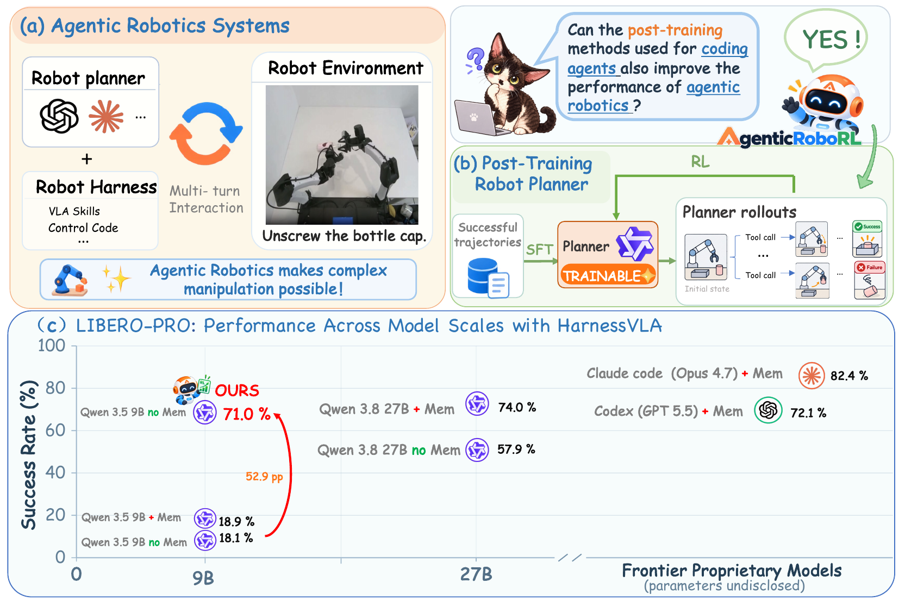
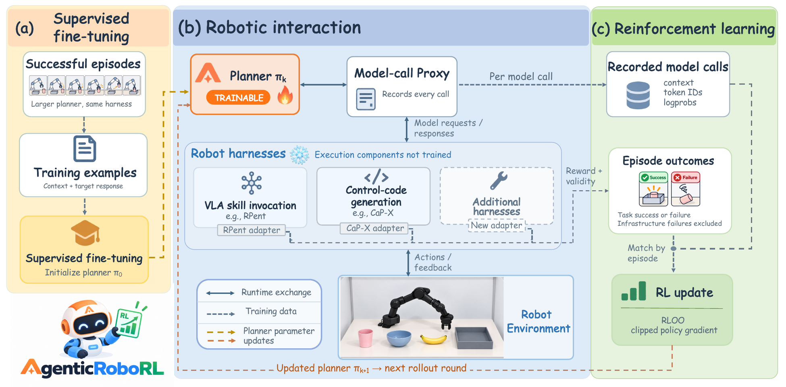

AgenticRoboRL is the first general post-training framework for agentic robotics systems.
No external memory
Multi-turn RL
One pipeline for ANY harness
18.1%+52.971.0%
LIBERO-PRO original 9B → post-trained 9B, no external memory
19.2%+53.072.2%
LIBERO-Plus same two checkpoints, no extra training

Overview of AgenticRoboRL. (a) Agentic robotics systems combine planners with robot harnesses for multi-turn interaction with the environment. (b) We post-train planners through SFT on successful trajectories followed by multi-turn RL. (c) On LIBERO-PRO, post-training improves a 9B planner’s success rate from 18.1% to 71.0%, approaching the 72.1% achieved by Codex (GPT-5.5) with memory. Mem denotes external memory.Method
Training pipeline

AgenticRoboRL training pipeline. (a) Successful trajectories are converted into training examples for SFT. (b) The planner interacts with the environment through a robot harness, while a proxy records its model calls. (c) Recorded calls are matched with episode outcomes for RL updates, excluding episodes invalidated by infrastructure failures. Harness-specific adapters support a common training pipeline across different harnesses. Only the planner is trained; execution components remain fixed.Harnesses
Harnesses
RPent · VLA skill invocation
The planner calls skills
Perception tools locate objects. A frozen VLA policy executes pick skills, and motion tools move the arm. Evaluated on LIBERO-PRO and LIBERO-Plus.
segmentback_projectpi0_pickmove_torelease
CaP-X · control-code generation
The planner writes code
The planner writes executable programs over perception and control APIs, and a motion controller runs them. Evaluated on the Object, Goal, and Spatial suites of LIBERO-PRO.
pythonperception APIcontrol API
The training pipeline does not depend on how a harness executes the planner. Connecting a new harness only needs a new adapter. We show two harnesses that execute plans in different ways.
Episodes
Base vs. SFT vs. RL
Two LIBERO-PRO episodes, position swap
Evaluation recordings, 256 × 256. Tool counts are taken from the planner's recorded calls. Single episodes are examples. Outcomes of individual episodes vary between repeated evaluations, so the 800-episode results below are the measure.
LIBERO-PRO by suite
T is task perturbation, S is position swap. 100 episodes per suite.
Original 9B+ SFT+ SFT + RLsuccess rate, %
LIBERO-Plus, no extra training
10,030 episodes over seven perturbation types.
Original+ SFT+ SFT + RL
Cite
BibTeX
@article{liu2026agenticroborl,
title = {AgenticRoboRL: Bringing Coding-Agent
Post-Training to Agentic Robotics},
author = {Liu, Xinxin and Xu, Bingxin and Bao, Wenrui and
Li, Ming and Bao, Wentao and Chen, Chen and
Shang, Yuzhang},
journal = {arXiv preprint arXiv:2610.28589},
year = {2026}
}